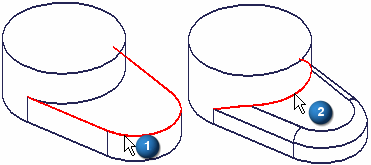
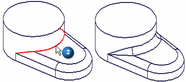
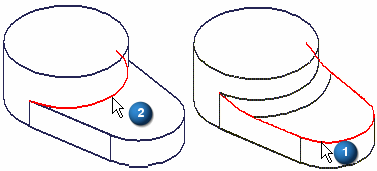
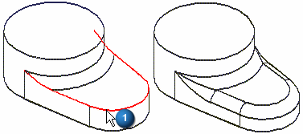
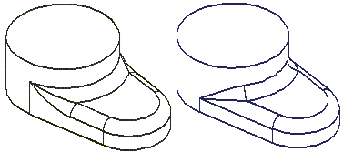
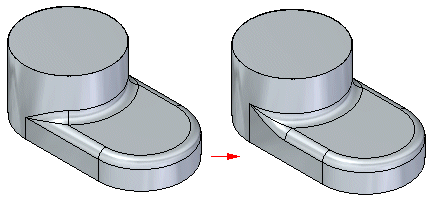

Rounding order
The order in which you apply individual round features to a model can make a difference in the completed model. This typically occurs when the edges you select to define the rounds intersect or meet.
For example, if you construct a round feature by selecting edge (1), the ends of edge (2) modify when the first round applies.

When you construct the second round feature by selecting edge (2), you get the following result.

If you reverse the order of the two round features, and select edge (2) for the first round feature, the ends of edge (1) modify when the round applies.

When you construct the second round feature using edge (1), you get the following result.

If you compare both results side-by-side, you can see that the surfaces where the two rounds meet are different.

Although both results are valid, one solution may be easier to manufacture or be more aesthetically acceptable than the other. In these situations, you may want to experiment by applying the round features in a different order to determine which result is the most appropriate for your requirements.
Reordering rounds
In synchronous modeling:
You can right-click a blend patch between intersecting blends and use the Reorder Rounds command on the shortcut menu to reorder rounds.

You can select multiple rounds and the radius for the rounds being reordered does not have to be the same.
How do I
Round part edgesEdit a synchronous round
Control the edit behavior of a synchronous round
Reorder rounded part edges
Blend part faces
Blend surface bodies
Construct a variable radius round
Learn more
Rounding and blendingEditing rounds
Rounding overflow options
How does blending work?
Defining the blend shape
Blends on surface bodies
Tangent hold lines
Variable radius rounds
Look up more details
Round commandRound command bar (ordered)
Round command bar (synchronous)
Round Options dialog box
Round Parameters dialog box
Reorder Round command
Blend command
Blend command bar
Surface Blend Parameters dialog box